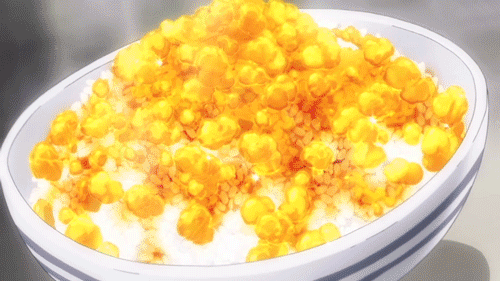

Furikake Gohan

Description
Ingredients
- Garlic
- Chicken Wings
- Ginger
- Sake
- Water
- Butter
- Light Soy Sauce
- Salt
- Eggs
- Scallions
- White Rice
- Olive Oil
Steps
- Fry chicken wings in olive oil
- In the same pan, add the sliced ginger and garlic
- Deglaze the pan with sake once the chicken is seared
- Add sugar and reduce the liquid by half
- Add soy sauce then reduce again
- Add water then simmer for 30 to 45 minutes
- Strain the liquid then put in a container lined with plastic wrap
- Put in the fridge for an hour then skim the fat off the top
- Scramble some eggs
- Cook in a pan on medium to low heat, then add butter
- Scrape the bottom of the pan constantly and control the temperature by taking it on and off the heat
- Add salt and some more butter
- Put freshly cooked rice in a bowl and add the cut up the gelatinous chicken stock
- Top with the runny scrambled eggs
- Add more of the gelatinous chicken stock over the eggs
- Sprinkle the chopped scallions on top